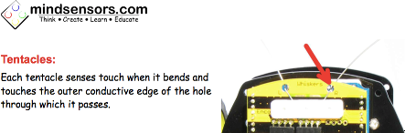
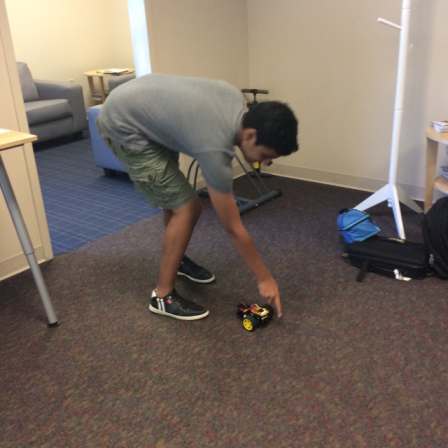

Some Notes on Configuring the BombiniBot
Three Preceding Steps to Control your BombiniBot Robot
-
Download the Scratch based programming environment from mindsensors.com and choose the windows link or the mac link depending on your operating system.
i) This will download as a compressed (zip) file, so unzip the folder once it is done downloading.
i) The folder will shown as 'BombiniBotWin' or 'BombiniBotMac'
-
Download the Arduino drivers here
i) Scroll down till you see DOWNLOAD, select this, then select the download file for Arduino CH430 Drivers. Unzip the folder once it has completed downloading.
i) This will greatly help with pairing the robot successfully.
-
Download the Arduino Environment on mindsensors.com Unzip the folder once it has completed downloading.
i) You will use this when programming your Arduino Compatible Board.
i) The folder will be shown as 'arduino-1.6.3-windows' or 'arduino-1.6.3-mac'
Connect your Robot to Bluetooth:
- Turn your robot on. If the LED light on your is blinking fast, your robot is ready to pair. If the LED is solid red or is blinking slow, follow the troubleshooting steps below
- On your computer, open Settings.
- Navigate to Devices to get to bluetooth. Make sure bluetooth is 'On'.
- Pair your robot to the computer. Your robot number is specified on the robot itself on the top board, the BombiniBot board.
- Under Related Settings, click More Bluetooth Options and select COM Ports. Note the COM Port number for the Outgoing Direction. (I suggest writing the COM Port down for reference).
- Once you have paired your robot and noted the Outgoing COM Port, open the bbbpanel found in the BombiniBot folder you downloaded previously.
- Under BombiniBot Port: select the correct Outgoing COM Port you noted earlier.
- Select Connect (If connected, your robot's LED light should now be green)
- Once connected, select Run Scratch
- With the scratch based programming environment that is open, you can add instructions for your robot by dragging and dropping them.
- To have your robot carry out these instructions, click the green flag at the top right of the window and watch your robot perform the steps you told it to perform!
Run Your Robot using Arduino:
Troubleshooting your Robot!
- If your robot's LED light is a solid red, follow these steps:
- Open up your command prompt (on Windows) or your Terminal (On Mac)
- For Windows I would suggest opening the 'Power Shell' -you can use almost all of the same commands as in the Terminal on Mac.
- Navigate to the BombiniBotWin or BombiniBotMac folder
- For Windows, type prog.bat COM17 (or the COM Port number you noted earlier)
- For Mac, type prog.bash COM17 (or the COM Port number you noted earlier)
- Then hit enter
- After this program runs, your robot will show a green light (if you have your robot directly plugged in to run arduino) or will blink red (if you are trying to connect via bluetooth) and is now ready to accept instructions!
- Now go back to Arduino and upload the code
Follow the steps in this video link to run the prog.bash/prog.bat
Further issues could be due to the 'whiskers' or antennae on the robot.
From the mindsensors.com overview of the BombiniBot, here is a close-up of the whiskers' location and a bit on what they do:


Hardware Checks & Double Checks
- Verify all of your connections are solid, and cables secured in their correct homes.
- Make sure your batteries are inserted into the pack correctly, facing the right way.
- Confirm you've fully attached the battery connector to the battery pack. Secure the battery back on the chassis, and make sure it isn't going to slide out!
- Pay attention to your whiskers, and make sure they aren't touching any parts of the PCB board. You can loosen the screws to realign them, and then tighten the screws back up to secure them.
- When you're finished tinkering with your BombiniBot make sure to switch off the power!